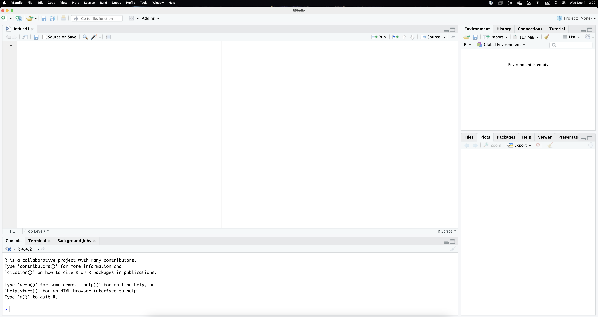
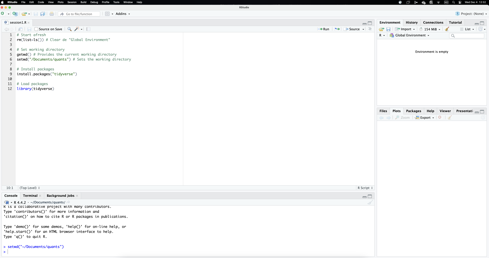

# Start afresh
rm(list=ls()) # Clear de "Global Environment"
# Set working directory
getwd() # Provides the current working directory
setwd("~/Documents/quants")
# sets the working directory to the appropriate folder
# Install packages
install.packages("tidyverse")
# Load packages
library(tidyverse)Intro to R
Implementing quantitative or computational analyses to historical (or any other) data requires some sort of statistical software. We will rely on R, a open-source free statistical software widely used by practitioners in many different fields both inside and outside academia. Although it is possible to work directly in R, using an integrated interface such as RStudio makes things much easier. RStudio basically integrates a text editor with the R console, so you can write, run and see the results of your analyses more easily.
We will be therefore download and install both software (R and RStudio) in your computer. Here is a link to access them (the version you install depends on whether you are using Windows or Mac).
R interface
Figure 1 below illustrates what RStudio looks like. As well as the different menus at the top, the interface is divided in four panels. We will use the upper-left panel to write the code that instructs R to perform the analyses. You therefore need to open a new R Script (from the menu or clicking the icon). While it is also possible to directly type the commands in the console, using a script allows easily saving and replicating our work later on. While most of the results will show up in the console in the lower-left panel, the tab plots in the lower-right panel reproduces the visualisations we implement (by contrast, the tab files shows the structure of the directory where we are working on). Lastly, the environmment, located in the upper-left panel displays the objects that we load into the system.

As mentioned above, we will use a script to document our work. Using scripts makes it easy to keep a record of the commands you use, which in turn facilitates replicating (or adjusting) your analyse later, which will save you so much time (you can also re-use your old scripts or borrow parts to use in other projects).
Setting up the stage
Given that R needs some basic information regarding which folder in our computer (or the cloud) we are working from and which set of tools we are going to use, scripts usually start in a similar way. The code below includes some useful preparatory commands. You can copy and paste it in your own script.
Notice that the symbol # allows creating “comments” (the characters turn green). R does not “read” these lines when implementing the code, so they can be used to both better structure our scripts and comment the code itself.
A couple of further clarifications are though in order. Firstly, it is often difficult to type the correct directory path (the one above is the one in my computer). Setting it manually through the menu helps properly selecting the folder you want to be working from: Session/Set working directory/Choose directory... Implementing this operation actually runs the necessary command in the console, so you can actually see the path to your folder or copy and paste it into the script (as it will be type in the script, you won’t need to do this again). I cannot emphasise enough how important this step is, since it indicates R where in our computer we will be working (so it is easy to access the necessary files). In this regard, it is important to have a folder structure (data, results, etc.) that facilitates navigating through your files.
Secondly, the way that R works is by relying on tools that are contained in different packages. There are many of these packages and they not only need to be installed (only once), but also open before using (each session). This is why we need the commands install.packages() and library() to indicate which packages need to be installed and opened. The package tidyverse, in particular, gathers together different packages that are commonly used like ggplot2, dplyr, readr, etc. (it is therefore not necessary to install and load those packages individually). We will keep incorporating different packages as we need them.
Your RStudio interface should look like something like Figure 2, except for the fact that the command setwd() should include the path to your own working directory. We can now run these lines of code selecting them and using the icon Run. Clicking it makes R go through those command lines in sequence (or through the whole script if you indicate so). It first clears the environment, then sets the working directory and lastly installs and opens the package tidyverse. The results of these commands happen in the console panel, which gives some comments that we can safely ignore for now.

Importing data sets
As well as the appropriate software (R and RStudio), this session uses two historical data sets to illustrate the concepts and methods covered here (you should have downloaded them). In order to start exploring this information, we first need to import the data into the R environment.
As an illustration, let’s focus on the Paisley dataset, one of the historical sources we will be exploring here. The raw data is stored as an excel spreadsheet named “paisley-data.xlsx” in the folder “data”. The command readxl() imports this excel file into the R environment. Although readxl is contained in the tidyverse package, you still need to open it explicitly using library().
library(readxl)
data <- read_excel("data/paisley-data.xlsx")Notice that we are instructing R to find the file that is located in a particular folder. We are using a relative path that stems from where your project is saved in (if the data is in the same working directory, you don’t need the path, just the file name).1 Notice also the symbol <- (called assignment operator). It serves to create a (temporary) object, named data containing the Paisley data, which is now in the “environment” we are working with. The name of the object is up to you, we call it “data” but it could be anything else with certain restrictions (i.e. not starting with a number). One neat R feature is that you can load many objects simultaneously (with different pieces of information each) and treat them separately depending on your needs (we will see that we can “create” those objects ourselves as results of our analyses).
Once an object has been created containing the data frame, it is listed in the upper-right window called environment. Typing the name of the object (data in this case) provides a peak at the underlying information. As shown below, the upper left corner indicates that this data frame (referred to as a tibble in the tidyverse terminology) contains 1,000 individuals (rows) and 21 fields (columns). By default, typing the name of the object (data) only provides information on the 10 first cases in order to save memory and space (imagine that your dataset contains 10 million observations!). The number of fields that are displayed depends on how much space is available in the console in the lower part of the interface. You are nonetheless informed about the number of rows and variables that are not visible (as well as the names of those variables). Notice also that, below the variable name, R also indicates the type of variable: some are categorical (“chr” meaning character) and others are numerical (“dbl” meaning double).
data# A tibble: 1,000 × 21
casen no month year forename surname sex age born countryb reside
<dbl> <dbl> <chr> <dbl> <chr> <chr> <chr> <dbl> <chr> <chr> <chr>
1 1 17 january 1841 AGNES M'INTY… fema… 24 pais… scotland colin…
2 2 45 january 1841 CATHERI… CARLIN… fema… 30 irvi… scotland paisl…
3 3 68 january 1841 JEAN WRIGHT fema… 17 pais… scotland paisl…
4 4 91 february 1841 MARGRET M'HAFF… fema… 18 glas… scotland paisl…
5 5 93 february 1841 JANET M'LEAN fema… 25 cath… scotland strab…
6 6 263 april 1841 ELIZA DUNCAN fema… 34 belf… ireland paisl…
7 7 280 april 1841 ANN RYLEY fema… 45 sligo ireland glasg…
8 8 299 april 1841 MARGRET M'LEOD fema… 40 gree… scotland green…
9 9 300 april 1841 MARY MILLAR… fema… 19 gree… scotland green…
10 10 310 april 1841 JEAN M'KINL… fema… 29 glas… scotland pollo…
# ℹ 990 more rows
# ℹ 10 more variables: feet <dbl>, inches <dbl>, weight <dbl>, occup <chr>,
# employed <chr>, literacy <chr>, marks <chr>, offence <chr>, sentence <chr>,
# source <chr>If you want to display more cases, you can use the function print(n = 15) and indicate the number of cases to be reported. Let’s pause for a moment to disect what the code below is doing. Notice first that it is crucial to indicate where the information you are asking for is coming from. Remember that we imported the Paisley data into the object name data. The pipe (|>) here basically takes this object and uses it as input in the next line of code, which uses the function print() to request listing the first 15 cases from that object. Alternatively, you can have a look at the last 20 cases by typing tail(20).
data |>
print(n = 15)# A tibble: 1,000 × 21
casen no month year forename surname sex age born countryb reside
<dbl> <dbl> <chr> <dbl> <chr> <chr> <chr> <dbl> <chr> <chr> <chr>
1 1 17 january 1841 AGNES M'INTY… fema… 24 pais… scotland colin…
2 2 45 january 1841 CATHERI… CARLIN… fema… 30 irvi… scotland paisl…
3 3 68 january 1841 JEAN WRIGHT fema… 17 pais… scotland paisl…
4 4 91 february 1841 MARGRET M'HAFF… fema… 18 glas… scotland paisl…
5 5 93 february 1841 JANET M'LEAN fema… 25 cath… scotland strab…
6 6 263 april 1841 ELIZA DUNCAN fema… 34 belf… ireland paisl…
7 7 280 april 1841 ANN RYLEY fema… 45 sligo ireland glasg…
8 8 299 april 1841 MARGRET M'LEOD fema… 40 gree… scotland green…
9 9 300 april 1841 MARY MILLAR… fema… 19 gree… scotland green…
10 10 310 april 1841 JEAN M'KINL… fema… 29 glas… scotland pollo…
11 11 343 may 1841 AGNES CURRIE… fema… 35 islay scotland paisl…
12 12 382 june 1841 ELLIZA MUNN fema… 18 john… scotland johns…
13 13 425 june 1841 SARAH BLACK … fema… 36 glas… scotland kelvi…
14 57 3 january 1841 THOMAS ROBERT… male 19 pais… scotland high …
15 58 19 january 1841 JOHN MONTGO… male 24 some… england barra…
# ℹ 985 more rows
# ℹ 10 more variables: feet <dbl>, inches <dbl>, weight <dbl>, occup <chr>,
# employed <chr>, literacy <chr>, marks <chr>, offence <chr>, sentence <chr>,
# source <chr>There are other commands that help knowing more about how the data set looks like such as glimpse() or names(). Feel free to try them out yourself. You can also have a sense of the magnitude and complexity of the whole data set by typing view(data). The latter opens up a new tab where you can explore the full data set at ease. Notice also that some values are missing. R signals them as NA (not available), meaning that no information is recorded in those fields for those observations. We will discuss the importance of missing values in due time. What it is important to stress now is that, although the Paisley data set is not especially big, scrolling up-down and left-right makes it obvious that it is extremely difficult to extract any kind of pattern by just “looking” at all this information. Here is where statistics (and R) come to the rescue. This is basically what this course will be about: a basic overview on how historians use computational methods to extract the rich information contained in our sources. If you have got this far, congrats, you are ready for it!
Further references
Alexander, Rohan (2023), Telling stories with Data. With applications in R (CRC Press).
Ismay, Chester and Kim, Albert Y. (2024), Statistical inference via Data Science. A ModernDive into R and the Tidyverse (CRC Press).
Silge, Julia, and Robinson, David (2017), Text mining with R. A tidy approach (O’Reilly).
Wickham, Hadley, Çetinkaya-Rundel, Mine, and Grolemund, Garret (2023), R for Data Science (O’Reilly; 2nd edition).
Footnotes
This will work assuming the working directory is set to the appropriate folder (see previous step above). Although we strongly advice not to use menus, finding the appropriate path to your files is not always straightforward, so we make an exception here.↩︎